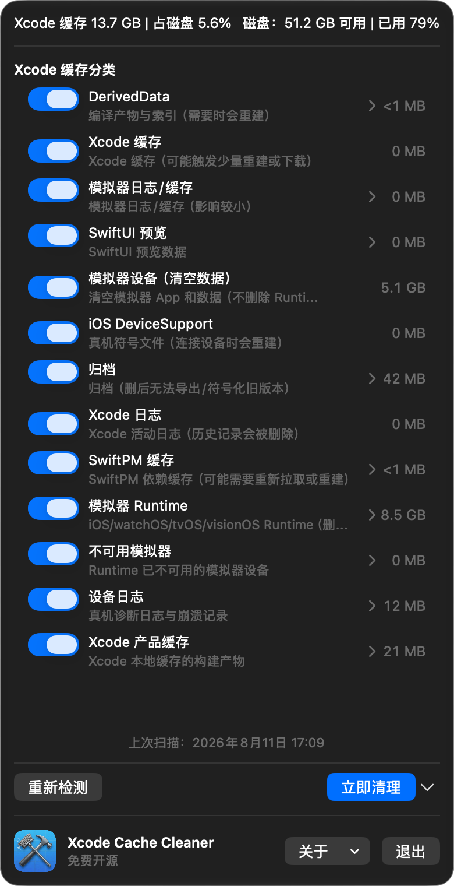
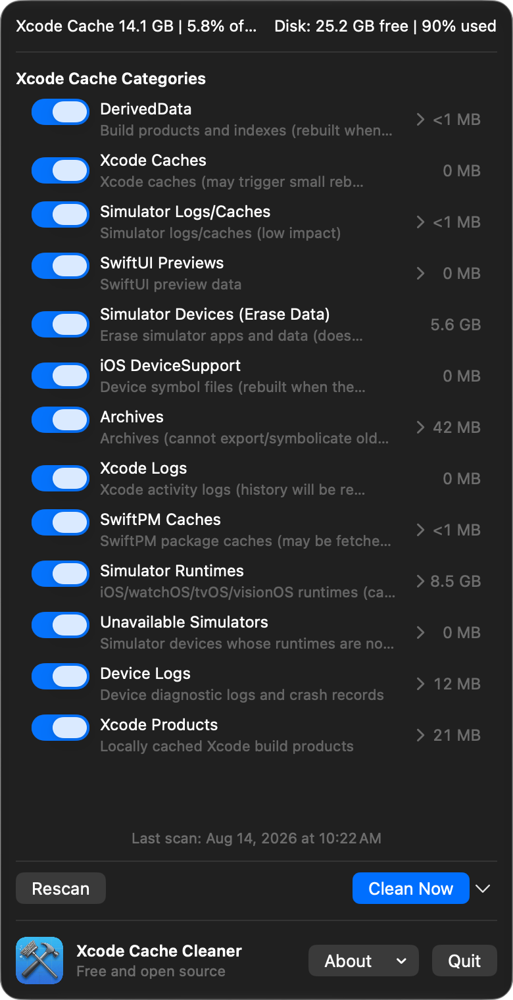
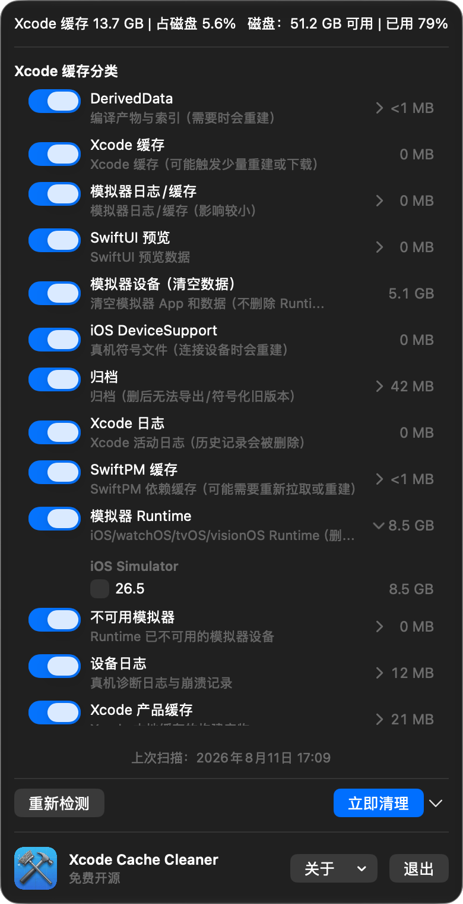
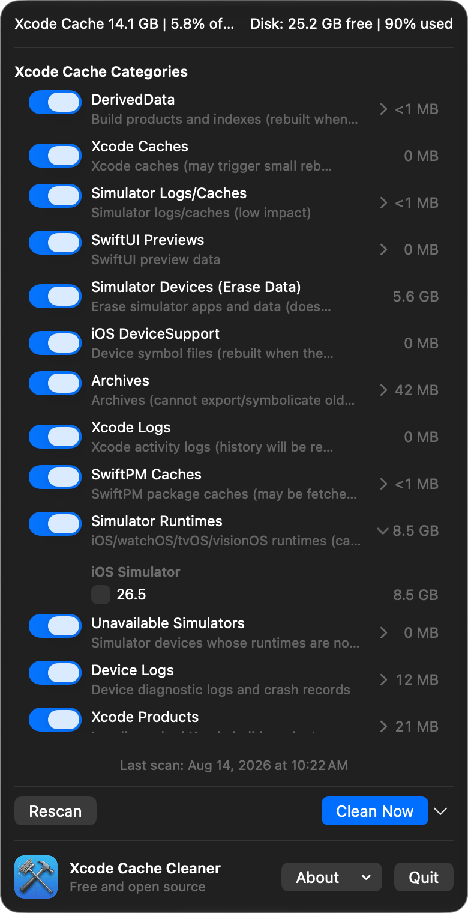

刚开始做 iOS，磁盘却被 Xcode 悄悄占满了？ New to iOS development? Xcode may be quietly filling your disk.
不用记命令，也不用手动翻目录。Xcode Cache Cleaner 是一个简单易用的 macOS 菜单栏工具，帮你找到 Xcode、Simulator 和 Runtime 占用的空间，选中后就能清理。 No commands to memorize and no folders to hunt down. Xcode Cache Cleaner is a simple macOS menu bar utility that shows what Xcode, Simulator, and Runtimes are using, so you can free up space in a few clicks.
适合 iOS 新手Made for new iOS developers 几步完成Done in a few steps 免费且开源Free and open source
v1.3 已使用 Developer ID 签名并通过 Apple 公证，下载后通常无需“仍要打开”。 Signed with Developer ID and notarized by Apple; downloaded users normally do not need “Open Anyway”.


不用记目录，打开就能看懂。 No folders to memorize. Open it and get started.
Xcode 的缓存、模拟器数据和 Runtime 都按分类列好。即使刚开始做 iOS，也能知道哪些可以清理，哪些最好保留。 Xcode caches, Simulator data, and Runtimes are grouped for you. Even if you are new to iOS, it is easy to see what can go and what is better kept.


打开应用Open the app
菜单栏里就能看到 Xcode 占用了多少空间。See how much space Xcode is using from the menu bar.
扫描一下Scan once
缓存、Simulator 和 Runtime 分开列好，想清理哪一类由你决定。Caches, Simulator data, and Runtimes are grouped for you.
点击清理Clean it up
点一下完成清理，之后重新扫描确认空间已经释放。Click once to clean up, then scan again to confirm the space is free.
新手也能放心清理。 A simple way to clean up.
缓存和日志可以交给定时清理；Runtime、归档和模拟器数据等重要内容，仍然由你手动决定。 Rebuildable caches can be scheduled; Runtimes, archives, and Simulator data stay in your hands.
| 内容Content | 建议What to do | 说明What to know |
|---|---|---|
| 可重建缓存和日志Rebuildable caches and logs | 可以清理Can be cleaned | Xcode 需要时会自动重新生成。Xcode rebuilds them when needed. |
| RuntimeRuntimes | 手动选择Choose manually | 不再使用时再删除，之后可能需要重新下载。Remove when you no longer need it; you may need to download it again. |
| 归档与 DeviceSupportArchives and DeviceSupport | 建议保留Usually keep | 发布或真机调试时可能还会用到。You may need them for releases or device debugging. |
| 模拟器设备数据Simulator device data | 确认后清理Confirm first | 里面可能有 App、用户数据和设备状态。It may contain apps, user data, and device state. |
把清理变成一件小事。 Keep cleanup simple.
设置一次，让应用定期处理可重建的缓存和日志。Runtime 等内容仍然由你决定。 Set it once and let the app handle rebuildable caches and logs. You decide about Runtimes and other important data.
当前选择：关闭定时清理
少一点磁盘焦虑，多一点开发空间。Less disk stress. More room to build.
免费开源，适合刚开始做 iOS 的你。Free, open source, and made for new iOS developers.